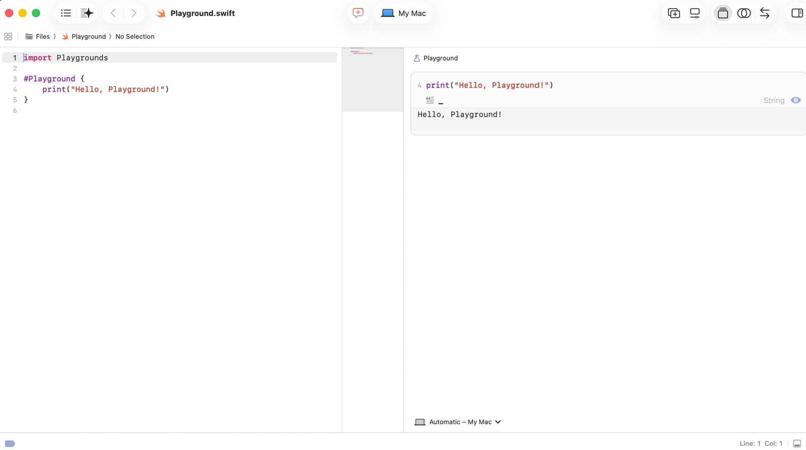
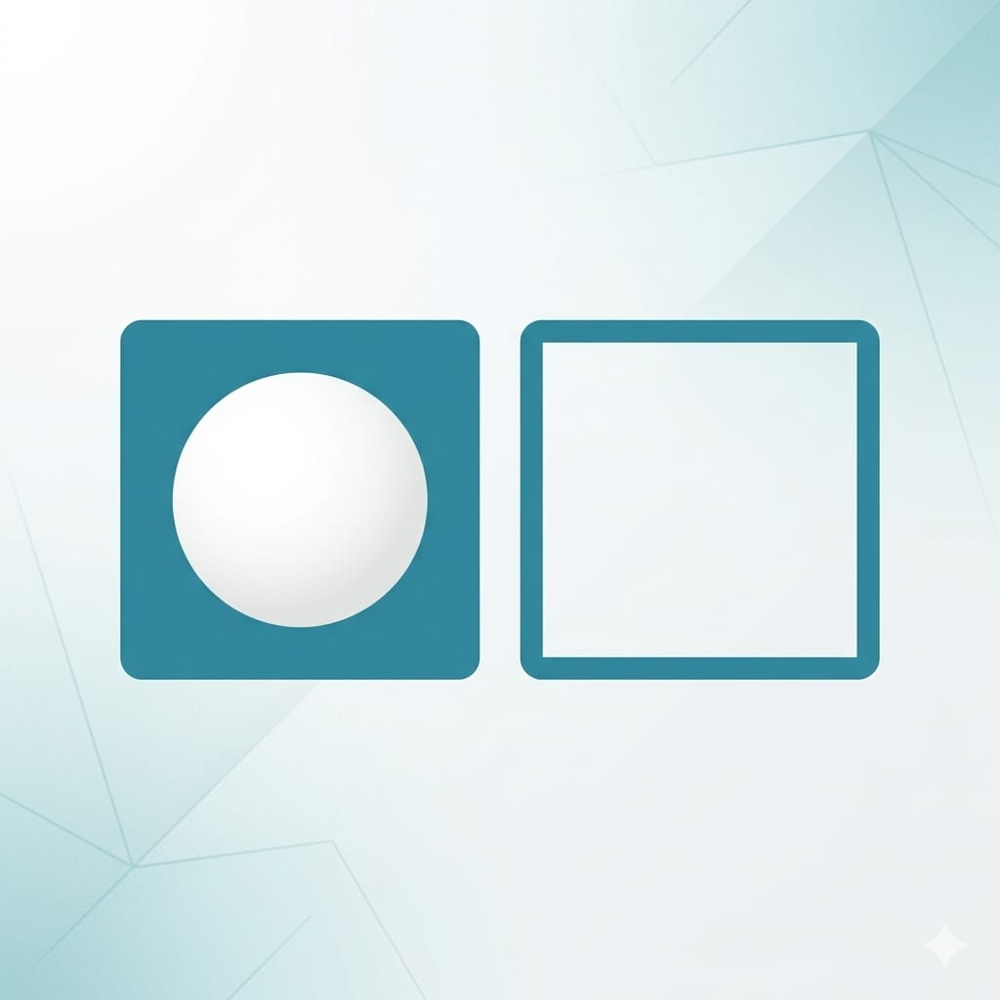

在上一篇，我們把 Mac、Xcode、Apple ID 都準備好了。這篇開始，真正動手寫程式。
第一個要學的是 Swift——iOS 的程式語言。這篇是整個系列裡需要多花點時間的一篇，因為語言基礎是地基，後面刻畫面、串資料全都建立在這上面。別急著趕進度，這篇的觀念多練幾次比較實在。
一個好消息：Xcode 內建一個叫 Playground 的功能，可以即時執行 Swift、馬上看到結果，不用建完整專案，很適合邊學邊試。
怎麼打開 Playground？ 兩個方式：
- 從歡迎畫面：打開 Xcode 的歡迎畫面（上一篇看過的那個），點 New Project 旁邊的小箭頭展開選單，裡面就有 Playground（跟 App、Command Line Tool 並列）。選它、挑一個空白範本、存個位置就開好了。
- 或用選單：Xcode 上方選單 File → New → Playground。
開好後大概長這樣：左邊是編輯區（寫程式碼），右邊會即時顯示執行結果。

怎麼寫、怎麼跑？ 新版 Xcode 的 Playground 會給你一個 #Playground { } 區塊，你的程式碼寫在大括號裡面。最基本的例子，用 print(...) 把東西印出來：
#Playground {
print("Hello, Playground!")
}寫好之後，Playground 會自動執行——不用按任何按鍵，你貼上或改動程式碼，它就會自己跑、右邊即時更新結果 Hello, Playground!。有時會等一兩秒（它在背景編譯），正常現象。
如果右邊沒反應，先確認一件事：程式有沒有紅色錯誤標記？有語法錯就不會執行，先把錯改掉。
想手動重跑一次？ 結果正確出來後其實不需要特別重跑——你只要改動任何一個字，Playground 就會自動再跑一次，這是最簡單的方法。如果程式真的卡住不動，關掉 Playground 再重新打開最乾脆。
小提醒：你可能會不小心點到行號旁邊出現的藍色箭頭，那是「只執行到某一行」的進階功能，新手用不到、也容易誤觸。想清掉它，一樣是關掉 Playground 再開就會消失。
print() 是你最好的朋友——想看任何東西的值，就把它丟進 print()。這篇後面的範例，你都可以包在 #Playground { } 裡、用 print() 印出來看結果。例如：
#Playground {
let name = "智慧喵"
print("哈囉，\(name)") // 印出：哈囉，智慧喵
print(1 + 2) // 印出：3
}跟著打、改改數值再看結果變化，是學語言最快的方法。
小提醒：Playground 是「練功房」，適合試語法、驗證觀念；等到要做真正的 App，才會用上一篇那種完整專案。兩者用途不同，別搞混。
>
下面各段的範例，為了聚焦在語法本身，我只寫核心那幾行。你自己練習時，把它們放進#Playground { }裡、想看結果就用print()包起來即可。
一、變數與常數：存放資料的容器
程式要處理資料，就需要地方存放。Swift 用兩個關鍵字：
var score = 100 // var：變數，之後可以改
let name = "智慧喵" // let：常數，設定後不能改
score = 120 // ✅ 可以，score 是 var
// name = "喵喵" // ❌ 會報錯，name 是 letvar（variable）：變數，值之後可以變動。let（constant）：常數，一旦設定就不能改。
實務習慣：能用 let 就用 let。這不是龜毛——把不該變的東西鎖成常數，可以讓編譯器幫你擋掉「不小心改到」的 bug，程式更安全。先預設用 let，真的需要改再換成 var。
二、資料型別：這個資料是什麼
每個資料都有「型別」，表示它是什麼種類。Swift 常見的幾個：
let age: Int = 30 // 整數
let height: Double = 175.5 // 小數
let isStudent: Bool = false // 真／假
let city: String = "台北" // 文字你可能注意到，前面的例子我沒有寫型別，Swift 也懂——因為它會型別推斷（type inference）：
let count = 5 // Swift 自動判斷這是 Int
let price = 19.9 // 自動判斷是 Double
let title = "教學" // 自動判斷是 String所以大部分時候你不用手動寫型別，Swift 會自己推斷。但重點是要心裡清楚每個變數是什麼型別，因為 Swift 對型別很嚴格——不同型別不能亂混用：
let a = 5
let b = 2.0
// let c = a + b // ❌ 報錯：Int 和 Double 不能直接相加
let c = Double(a) + b // ✅ 先把 a 轉成 Double這種嚴格一開始會覺得囉唆，但它能在你寫錯的當下就攔下來，而不是等 App 上線才出包。
三、流程控制：讓程式做判斷與重複
條件判斷 if / else
let temperature = 28
if temperature >= 30 {
print("好熱，開冷氣")
} else if temperature >= 20 {
print("天氣舒服")
} else {
print("有點冷")
}switch：多重條件更清楚
let grade = "B"
switch grade {
case "A":
print("優秀")
case "B":
print("良好")
case "C":
print("及格")
default:
print("要加油")
}Swift 的 switch 很強大，而且每個 case 不用手動寫 break（不會像某些語言那樣「掉下去」執行下一個 case）。
迴圈：重複做某件事
// for 迴圈：重複固定次數
for i in 1...5 {
print("第 \(i) 次") // \(i) 是字串內插，把變數塞進文字裡
}
// while 迴圈：條件成立就一直做
var count = 3
while count > 0 {
print("倒數 \(count)")
count -= 1
}1...5 是 Swift 的「範圍」寫法，代表 1 到 5。\(變數) 這種寫法叫字串內插，很常用，把變數的值嵌進文字裡。
四、函式：把一段功能包起來重複用
函式讓你把一段程式碼包成一個可重複呼叫的功能：
// 定義一個函式：接收名字，回傳打招呼的句子
func greet(name: String) -> String {
return "哈囉，\(name)！"
}
// 呼叫它
let message = greet(name: "智慧喵")
print(message) // 印出：哈囉，智慧喵！拆解一下：
func：宣告函式的關鍵字。greet：函式名稱。(name: String)：參數，這個函式需要一個 String 型別的name。-> String：回傳型別，表示這個函式會吐回一個 String。
函式是組織程式的基本單位。把重複的邏輯包成函式，程式會更好讀、好維護。
五、可選型別（Optional）：Swift 最有特色的觀念
這是 Swift 新手最容易卡、但也最重要的觀念，值得多花時間。
問題是這樣的：有時候一個變數「可能有值，也可能沒有值」。例如你去查一個使用者的暱稱，他可能設過、也可能沒設。這個「可能沒有」的狀態，Swift 用可選型別來表示。

把可選型別想成一個盒子：盒子裡可能裝了東西，也可能是空的（空的狀態叫 nil）。
var nickname: String? = "喵喵" // 型別後面加 ? 表示「可選」
nickname = nil // 也可以是空的（沒有值）那要怎麼安全地把盒子打開、拿出裡面的值？最常用、最安全的做法是 if let：
var nickname: String? = "喵喵"
if let name = nickname {
// 盒子裡有值，name 就是取出來的值
print("暱稱是 \(name)")
} else {
// 盒子是空的
print("還沒設定暱稱")
}還有一個很實用的 ??（預設值運算子）：盒子空的時候給一個備用值：
let displayName = nickname ?? "訪客"
// nickname 有值就用它，是 nil 就用「訪客」為什麼 Swift 要搞這套？ 因為「以為有值、結果是空的」是 App 當機最常見的原因之一。Swift 逼你在寫程式時就明確處理「可能沒有值」的情況，用一點前期的麻煩，換掉大量上線後的當機。一開始會不習慣，但寫久了你會感謝它。
動手做：把觀念串起來
講了這麼多，來個小練習把前面的變數、型別、流程控制、函式全用上。直接複製下面整段、貼進你的 Playground 就能跑，它會依分數印出對應等第：
#Playground {
// 一個函式：輸入分數，回傳等第
func grade(for score: Int) -> String {
switch score {
case 90...100:
return "優秀"
case 60..<90:
return "及格"
default:
return "要加油"
}
}
// 準備幾個分數，用迴圈跑過每一個
let scores = [95, 72, 48]
for s in scores {
print("分數 \(s)：\(grade(for: s))")
}
}執行後，完整的輸出是三行：
分數 95：優秀
分數 72：及格
分數 48：要加油咦，我的右邊只顯示「分數 48：要加油」一行？ 別緊張，你的程式沒錯、三次也都有跑！這是 Playground 的顯示特性：右邊那個行內結果面板，同一行 print 執行多次時，只會顯示最後一次的值（所以你只看到 48 那行）。
>
想看到完整三行，打開 Xcode 底部的主控台（Console）：點編輯區右下角的小方框圖示就能叫出／收起它（或用選單 View → Debug Area → Show Debug Area）。主控台會完整印出每一次 print 的結果。這個主控台之後 debug 時天天要用，現在就先認得它。
>
（補充：這只是 Playground 面板的顯示方式；等你之後做成真正的 App 用模擬器跑，print 一樣會完整出現在主控台，不會有這現象。）
看懂了嗎？這一小段就用到了函式（grade）、參數與回傳型別（Int → String）、switch 判斷、陣列（scores）、for 迴圈、字串內插（\(s)）。建議你動手改改看：換掉分數、多加一個等第（例如 80 分以上算「良好」）、把 90...100 的範圍調一調，看結果怎麼變。改壞了不會怎樣，這就是 Playground 的用途。
這一步大約要花多久？
Swift 基礎建議抓 2~3 週，重點不是讀完，是真的動手打。給你一個實在的練法：
- 每個觀念都在 Playground 親手打一遍，改改數值看結果變化。
- 可選型別多練幾次，這是最容易忘、也最關鍵的。
- 試著把前面幾個觀念組起來，寫一個小東西，例如「輸入分數、印出對應等第」的小程式。
不用背，理解 + 手感最重要。這些觀念在你之後寫每一個 App 時都會反覆用到，現在打好底，後面會很順。
下一篇
語言基礎有了，下一篇就開始好玩的部分——用 SwiftUI 做出第一個看得到、點得到的 App。我們會把畫面刻出來，加上互動，讓它真的動起來。
一步一步來，你已經走過最枯燥的地基了。下篇見。🐾
系列導覽
- 📚 回到 App 開發完整指南 全系列目錄
- ⬅️ 上一篇：iOS 開發第一步：環境準備
- ➡️ 下一篇：用 SwiftUI 做第一個 App